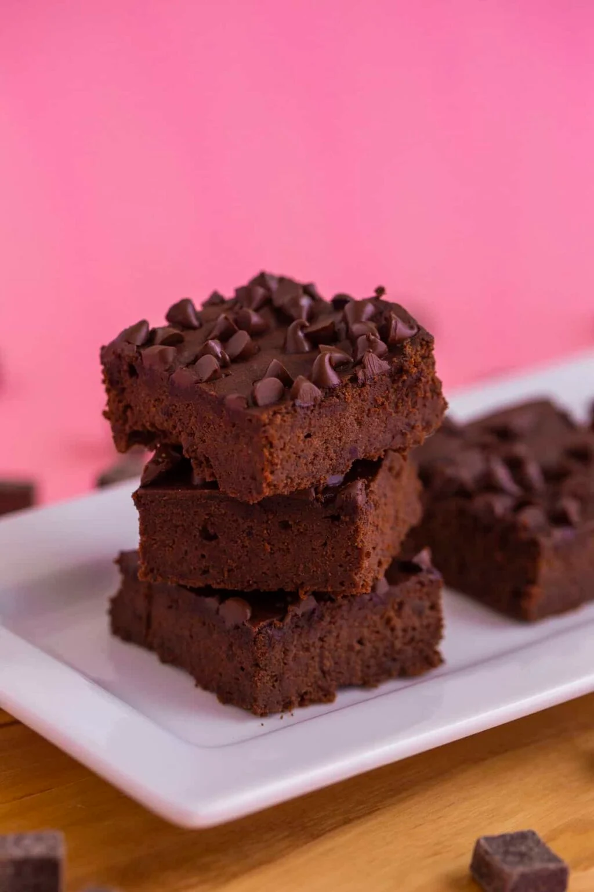

Black Bean Brownies

"Delicious gluten-free and sugar-free brownies that will make your squats STRONGER"
Ingredients:
- 1 can, 15oz black beans, drained & rinsed (~1¾ cup cooked beans)
- 3 eggs
- 1/2 cup cocoa powder
- 2/3 cup coconut sugar or stevia, or granulated sweetener of choice
- 2 Tbsp nut butter, cashew, almond, peanut, etc.
- 1 Tbsp melted coconut oil, or butter
- 1½ tsp baking powder
- 1 tsp vanilla
- pinch of salt
Optional Toppings:
- 3 Tbsp mini chocolate chips
Steps:
- Preheat oven to 350°F (180°C).
- Add all ingredients (except for chocolate chips) into food processor. Blend until smooth.
- Pour batter into an 8-inch square pan lined and sprayed with cooking spray.
- Sprinkle chocolate chips on top, if desired.
- Bake 20-22 minutes, until a toothpick comes out clean.
- Allow to cool completely before removing from pan, slicing, and enjoying.
- Store in an airtight container or sealed bag at room temperature for up to a week.